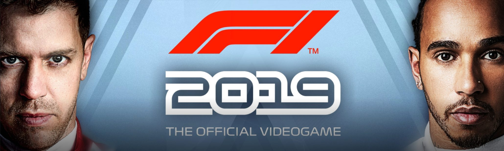

This is the most up to date information of the current season (2019)

Current 2019 World Drivers Championship Standings
Current 2019 World Constructors Championship Standings
Honorable mentions throughout the season so far
During the winter break after the final race of 2018, Valtteri Bottas came under a lot of flack for poor performances and failing to get a win for the entire season meanwhile his team mate won the championship. At the first race of the season he silenced
them all after putting in a solid performance and getting his first win in over a year and was quoted on his team radio saying 'to who it may concern f*** you'.
In only his second race for Ferrari, Charles Leclerc was able to get pole position for the Bahrain Grand Prix. Despite a relatively poor start leading to his team mate overtaking him he managed to regain first place and controlled the
race for its entirety. However, Charles was less than 10 laps away from winning his first ever Grand Prix in only his second race his new team, the legendary prancing horses, but very unfortunately he suffered an engine issue that lead to
him being overtaken by Lewis Hamilton, who went on to win the race and Valtteri Bottas. Thankfully due to and incident that brought out the safety car, Charles was able to get his first podium due to the race finihsing under the safety car.
The Chinese Grand Prix was the 1000th Grand Prix ever and to most fans it summed up Formula 1 in recent years perfectly... due to the fact that the race was incredibly boring.
In the first 5 races of the season Mercedes have had the cars finish in both 1st and 2nd place and have had another 2 1-2's throughout the rest of the season so far. In addition, it wasnt until Max Verstappen won in Austria that a non
Mercedes had won a race.
The Monaco Grand Prix is arguably the most famous Grand Prix of all time and this was quite exciting as young blood Charles Leclerc was competing in his first home race for his new team however, things didn't go exactly how Charles would
have wanted. Due to some team errors, his team mate Sebatian Vettel knocked him out of the first qualifying session meaning he was starting 16th in his home Grand Prix. Charles began the race very aggresively, desperate to make up places but
the track is infamous for the inability to overtake. To be fair to Charles he made some fantastic overtakes at the Grand Hotel Hairpin and at Rascasse (which is probably the most infamous of them all for not be able to overtake). However,
the circuit struck again as he tried to pass Romain Grosjean at Rascasse one lap after superbly passing Nico Hulkenburg there but he missed judged the corner and clipped the barrier and spun his car and damaged the car floor and his tyre.
He rushed round the track to get to the pits but in doing so damaged his floor even more resulting in his eventual retirement from the race.
After Leclerc's heartbreak in Bahrain, Ferrari were still looking for their first win of the season and they thought they would get it when Vettel qualified first and controlled the race comfortably. However, towards the end of the race
Hamilton began to pile the pressure on and force Vettel into a mistake where he went of the track, Hamilton tried to capitalise and overtake but Vettel cut him off when rejoining the track. This lead the stewards to give Vettel a 5 second
penalty for rejoining the track in an unsafe manor. This meant that Vettel dropped down to 2nd and Ferrari were still winless.
In recent years, Austria has been a race to watch with a very entertaining race happening last year and this year. Charles Leclerc gained his second podium of his career and Max Verstappen was along side him on the front row in second.
Max had a very poor start dropping back down to 7th by the end of the 2st lap. But thanks to a brilliant drive and strategy Max was able to get much fresher and softer tyres later in the race and he cut through the pack like they weren't even
there and managed to overtake Charles Leclerc who had dominated to race on the second to last lap and went to win what was a very entertaining race. This has also paved the way for a fantastic rivalry between Charles Leclerc and Max Verstappen.
The German Grand Prix was onE of the most entertaining races you will ever see in your life. This race was the first wet race of the year and no teams and any data they needed as the new 2019 spec tyres hadn't been tested in the rain
so every team was guessing there way through the race. Chaos proceeded to ensue with team attempting to guess which tyre compound was the fastest for the current conditions. 7 drivers retired from the race due to crashing out, and Max Verstappen
proceeded to win the race and there was a suprise on the podium. Daniil Kvyat, a Toro Rosso driver, had managed to sneak his way into third after the chaos of all the teams pitting to go onto the soft compound tyre.
During the 3 week interval half way through the season, there has been specualtion about if Pierre Gasly, the new Red Bull driver, was going to be demoted back to Toro Rosso and Alex Albon, Pierres replacement after moving to Red Bull,
would be replacing him again. And the speculation was correct with Pierre Gasly partnering Daniil Kvyat at Toro Rosso and Alex Albon partnering Max Verstappen at Red Bull.
The Belgian Grand Prix is the first race after teh 3 week interval and it was over shadowed by on shocking event that happened on the saturday. Antoine Hurbert, who was a Formula 2 driver and was in the Renault driver programme, died
after a high speed collision on track. The following F2 race was cancelled and the F3 and F1 races where filled with tributes to the young french man. All cars raced with a sticker saying 'Racing for Antoine' on the side. Charles Leclerc,
who was a close friend of Antoine, won the F1 race and dedicated his first win and his dream come true to his friend.
The Italian Grand Prix followed and with the Scuderia without a home win since 2006, 2019 looked to be their year following a shambollic ending to the final qualifying session put Charles Leclerc on pole. Besides immense pressure from
Lewis Hamilton and Valterri Bottas once Lewis locked up and was forced to take an exit road, Charles Leclerc put himself in the history books and all the hearts of the Tifosi with his second victory of his career.